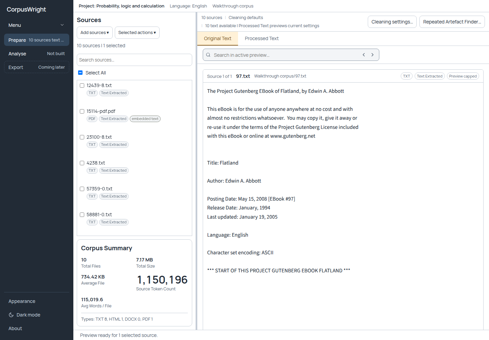
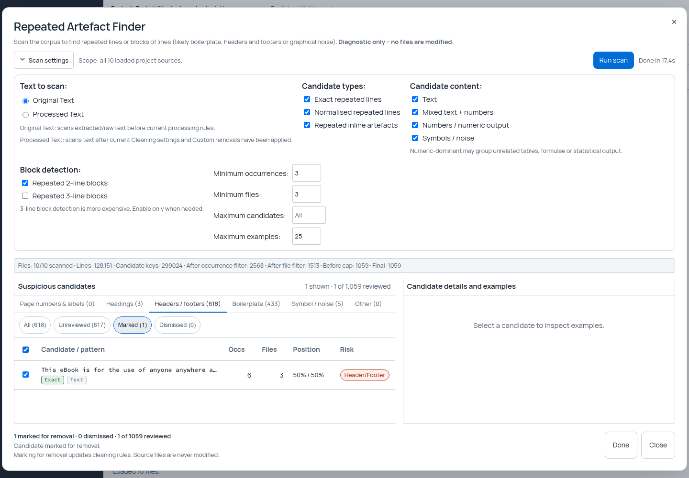
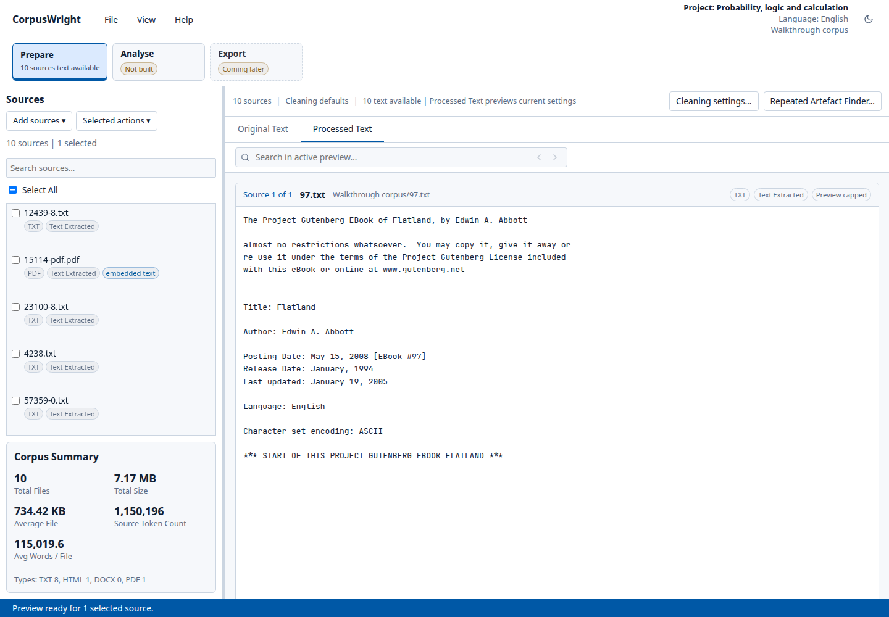
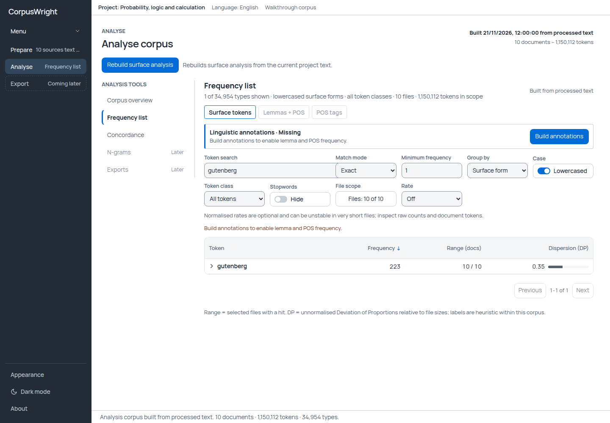
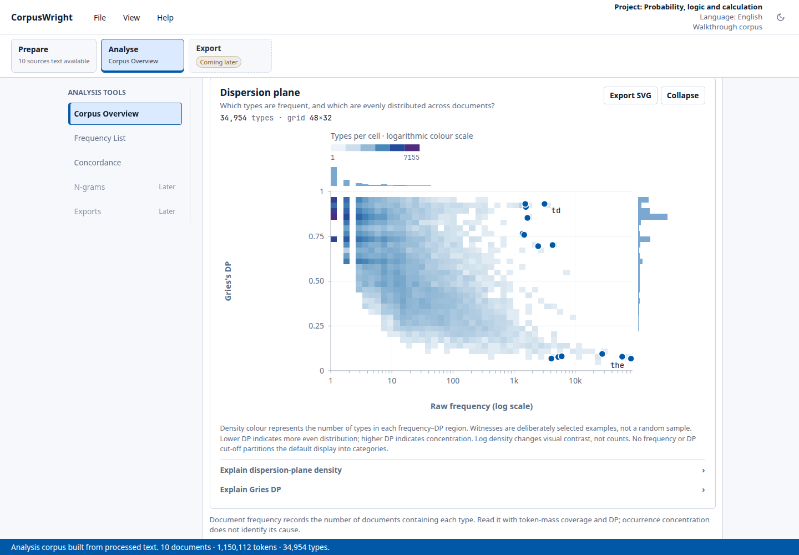
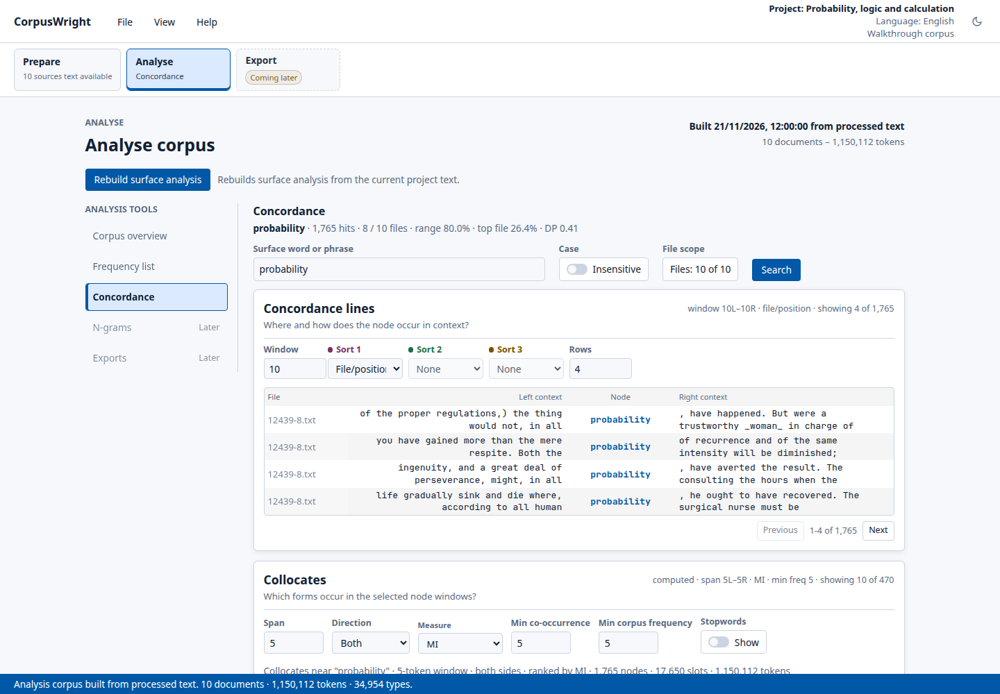
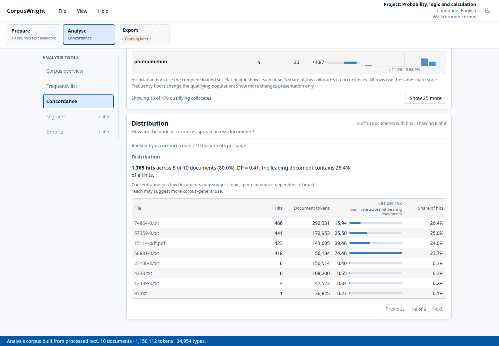

CorpusWright
Open-source desktop software for preparing text corpora, describing them statistically and reading the occurrences behind the counts.
Public alpha · Release notes
Follow one corpus from its files to a figure and back to the text.

01 Sources
Read the files before counting
The corpus brings together 10 nineteenth-century works on logic, probability and related subjects. Prepare counts 1,150,196 tokens extracted from plain text, HTML and PDF.
Before preparation, the corpus count includes both the books and their digitisation notices.

02 Repeated artefacts
Review repeated text before removing it
The Repeated Artefact Finder groups recurring lines and short blocks. The highlighted licence fragment occurs 6 times across 3 files.
Review the examples before accepting individual removal rules. Different editions can wrap the same notice differently or carry a different notice.


03 Cleaning
Check which text reaches the counts
Open Flatland in Prepare and compare its Original Text and Processed Text tabs. The original preserves the extracted text, and the processed preview reflects the current preparation settings.
This rule removes 84 tokens across the corpus, leaving 1,150,112. Check what remains in each edition before relying on its counts.


04 Counts
Read frequency with range and dispersion
Frequency counts all occurrences. Range counts the documents in which a type occurs. Gries's DP compares a type's observed shares across documents with the token shares of those documents.
Before cleaning, gutenberg occurred 223 times across 10 works (DP 0.3531). All 223 occurrences remain after applying the reviewed rule, which targets a licence line without that word.


05 Dispersion
Frequency alone hides how a type is spread
The Dispersion plane plots frequency against DP for the 34,954 observed types. A low DP indicates that a type's occurrences are distributed roughly in proportion to document sizes.
Use the plane to see how different combinations of frequency and dispersion occur in the corpus. Look up a particular word in the Frequency list or read its occurrences in Concordance.


06 Context
Return from the distribution to the text
Search for probability in Concordance. It appears 1,765 times in 8 works. Distribution shows which books contain the word, and the lines show individual matches in context.
Outside the treatises by Boole, Venn, Laplace and Jevons, 7 of the 17 hits occur in the phrase in all probability. It expresses how likely the writer judges something to be.




07 Record
Keep the record that accompanies the export
The cleaned-corpus export includes preparation settings, warning records and SHA-256 checksums for source and processed files. This export recorded 4 warnings.
Keep the original files and the software release alongside the export. Use the checksums to verify the bytes when you revisit the analysis.
{
"cleaning_config": {"removal_rules": [{"enabled": true,"scope": "whole_line"}]},
"files": [{
"processed_hash_sha256": "b84a8e6a8f871b17b7d73221d7a8239a9cf95623e49c4ed133ba0568953270d7",
"relative_path": "97.txt",
"source_hash_sha256": "9933a0838441f03d5c8600da5f54c4a8af9cbcbf845bfeaa8e1b7213a2c3917f"
}],
"files_exported": 10,
"warnings_count": 4
}manifest.json. Source paths are omitted.Measures and their sources
| Measure | Definition used | Reference |
|---|---|---|
| Dispersion | Unnormalised deviation of proportions | Gries, 2008 and Lijffijt & Gries, 2012 |
| Lexical diversity | Moving-average type-token ratio and measure of textual lexical diversity | Covington & McFall, 2010 and McCarthy & Jarvis, 2010 |
| Collocation | Association within a context window | Evert, 2008 and Hardie, 2014 |
| Concentration | Effective document count and entropy-equivalent vocabulary size | Hill, 1973 and Shannon, 1948 |
| Vocabulary | Lexical spectrum, rank–frequency and observed-order vocabulary growth | Baayen, 2001 and Clauset, Shalizi & Newman, 2009 |
Download CorpusWright
- macOS · Apple silicon
.dmg - macOS · Intel
.dmg - Windows · x64
.exe
Cite CorpusWright
Use the citation for the software release used in your analysis.